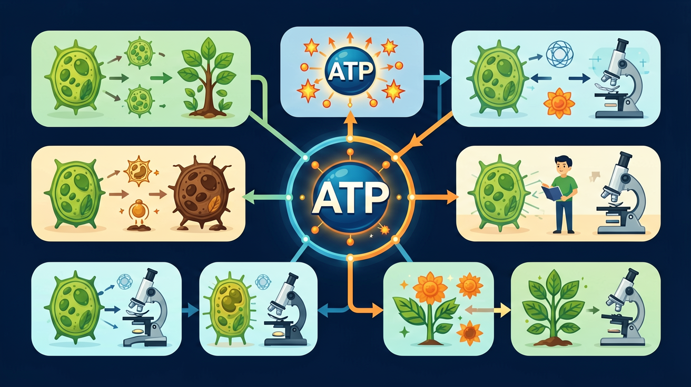
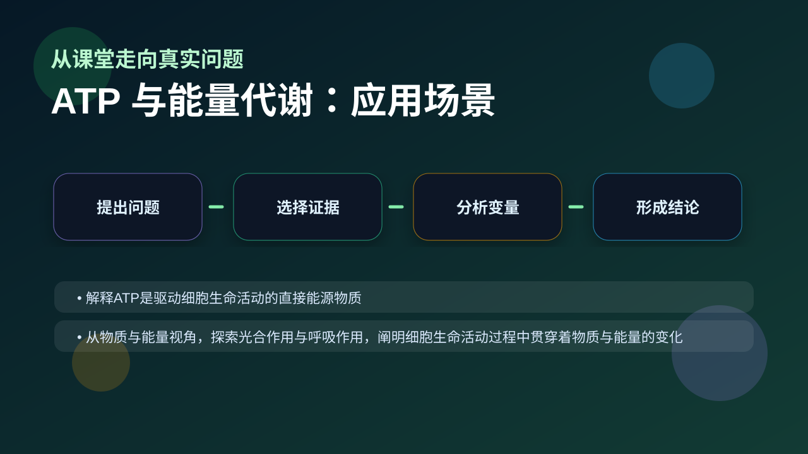

Gallery v1.0.0 · skill v7.14
物质和能量怎样在细胞里被转换，并最终支持生命活动？

先选一个卡点。后面的例子、互动和 AI 学伴都会围绕它给你最小提示。
选择或输入后，本课会围绕你的问题展开。
如果学生只说出概念名称，继续追问：题干里哪个证据最关键？这个证据对应分子、细胞、个体还是生态系统层级？如果改变 ATP合成速率、ATP水解速率、氧气供应和代谢底物 中的一个条件，结果会怎样？这三问能把答案从背诵推进到科学解释。
❓ 为什么说ATP是细胞的能量货币？
❓ 剧烈运动时肌肉酸痛和ATP有啥关系？
❓ ATP和葡萄糖的能量到底谁更直接？
学完这一课，这些问题你都能自信地回答。
已经知道：此前已学习线粒体是细胞的能量工厂，知道呼吸作用分解有机物释放能量，并掌握主动运输、肌肉收缩等需要消耗能量的生命活动。
但问题是：学生常误认为ATP是储能物质而非能量通货，难以理解ATP/ADP循环如何实现即时供能，且易混淆呼吸作用释放能量与ATP水解供能的关系。
所以学：当运动员冲刺时出现肌肉酸痛，需要通过分析ATP周转速率与无氧呼吸的关系，解释为何剧烈运动后会出现氧债现象。
下列哪种物质能直接为肌肉收缩提供能量？
设计实验比较慢跑与冲刺时ATP合成途径差异
现象入口：肌肉短时间剧烈收缩时能量需求瞬间升高，但细胞中ATP含量并不会无限增加。
机制解释：ATP是直接能源物质，通过ATP与ADP相互转化，把呼吸作用释放的能量转接给主动运输、合成反应和运动。
证据抓手：证据来自耗能过程受呼吸抑制影响、ATP水解与吸能反应偶联、细胞ATP含量相对稳定。
变量线索：ATP合成速率、ATP水解速率、氧气供应和代谢底物。做题时先找变量，再判断机制，最后写证据。
情境：主动运输停止不一定是膜坏了，也可能是ATP供应不足。
作答路径：现象：主动运输停止→机制分析：可能ATP供应中断或载体蛋白失效→证据排查：若其他耗能过程正常进行，则排除ATP供应问题，指向载体蛋白异常
评分提醒：典型失分：混淆直接/最终能源（如选葡萄糖）、遗漏磷酸键能释放机制、未说明ATP-ADP动态转化关系
观察ATP分子结构简式A-P~P~P，注意三个磷酸基团与腺苷的连接方式
对比ATP水解与合成反应式：ATP→ADP+Pi+能量 vs ADP+Pi+能量→ATP
分析主动运输中ATP水解供能机制：载体蛋白构象改变需要磷酸键断裂释放的能量
解释剧烈运动时肌肉细胞ATP-ADP循环速率加快与呼吸作用增强的关系

解释运动疲劳、离子泵工作、光合作用暗反应时，都要找能量从哪里来、到哪里去。
提交后会检查你的解释是否包含现象、机制和变量。
细胞耗能活动增强时 ATP 被消耗，呼吸作用立即加速合成——观察 ATP 水平如何在扰动后回归稳态。
💡 探究任务：把耗能冲击拉到最大，再把呼吸合成速率调小，看 ATP 水平能否回到正常范围，解释 ATP⇄ADP 快速转化的意义。
关于ATP与ADP转化，正确的是？
先独立作答，再点选项查看对错与错因。
比赛中小张出现抽筋的主要原因是
下列过程能直接产生ATP的是
赛后小张饮用运动饮料恢复时，其中糖分主要用于
运动员静息时，ATP主要通过____呼吸在线粒体生成
答案：有氧
氧气充足时葡萄糖彻底氧化
ATP水解时释放能量的化学键是____键
答案：高能磷酸
末端磷酸基团水解断裂
剧烈运动时肌肉细胞能量供应机制正确的是
学习小结：ATP通过水解高能磷酸键直接供能，与ADP的快速转化构成能量通货，糖类等需先转化为ATP才能被细胞利用
把ATP当成“长期储能物质”或把能量储存在高能磷酸键这个说法机械化，是常见错误。
只说“增加/减少”不够，要写清改变的是 ATP合成速率、ATP水解速率、氧气供应和代谢底物 中的哪一个。
没有实验现象、曲线趋势或结构证据，答案就像猜测。
✅ ATP是能量载体而非储存库，脂肪/糖原才是储能物质
💡 混淆能量载体与储能物质概念
✅ 两者都伴随能量变化，只是方向相反
💡 忽视能量守恒原理
口诀：一腺三磷高能键，水解供能变二磷
类比：ATP像手机充电宝，随用随充不耽误
视频用语音和动态画面回顾本课主线：问题情境 → 机制模型 → 证据判断 → 迁移应用。
旋转 3D 分子模型，观察结构层级。请把结构特点和 ATP 与能量代谢 中的功能解释对应起来：结构不是装饰，而是功能的证据。
💡 操作提示：拖拽旋转模型，思考“形状、空间位置、结合位点”如何影响生命活动。
写出ATP结构简式并标出高能键位置
分析萤火虫发光器中ATP如何转化为光能
设计实验证明神经递质释放需要ATP供能